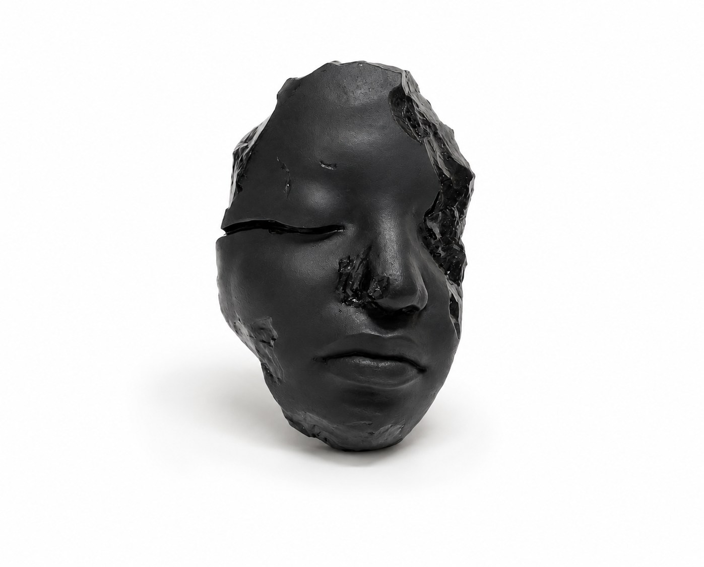

I am a designer and creative technologist who designs and builds digital and physical products. I like things that feel handmade even when they run on code.
I’m an interaction design student at The George Washington University (Class of 2027), admitted at sixteen. Since then I’ve worked on design initiatives across GW and with institutions including the National Gallery of Art and the District Department of Transportation (DDOT). Most recently, I led a team of 14 as Head Project Manager on the exhibition catalogue for Cracks and Reforms: The 1920s through the GW Collection.

Also an artist.
I’m also a traditional artist, working in fine art sculpture. Shaping something with my hands taught me to care about form, surface and how an object feels to be near, and I carry that into the screens, interfaces and products I design.
Designer who can build.
Every project moves the same way: design the product, give it a brand and a website, then build it.
01. Digital Product
- UX/UI
- Web design
- App design
- Prototyping
- Design systems
02. Brand + Web
- Identity
- Branding
- Websites
- Marketing materials
- Social systems
03. Build
- Frontend
- Interactive websites
- Creative coding
- Prototypes
- Physical/digital experiences